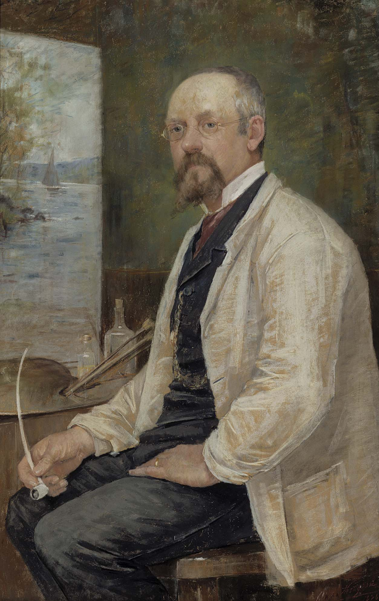

Berndt Adolf Lindholm (20 August 1841 – 15 May 1914) was a Finnish landscape painter (belonging to Swedish speaking population of Finland). He is usually associated with the Düsseldorf School, but his work also displays early Impressionist elements. He specialized in coastal scenes. (Wikipedia)
Berndt Lindholm
Finnish painter, 1841 - 1914
